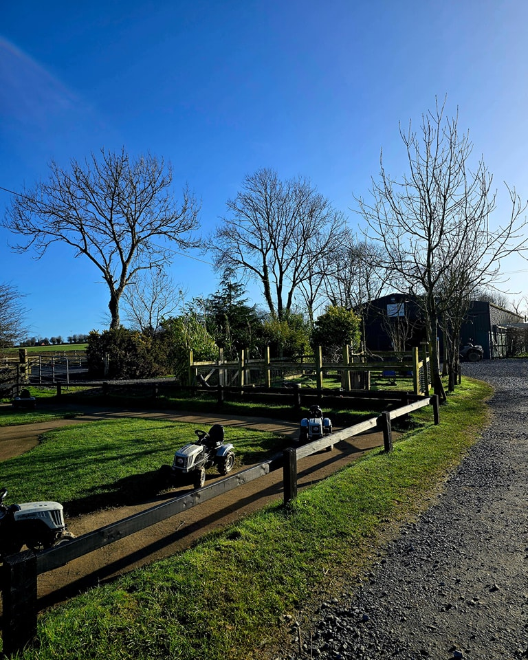

Clonroche tour guide and history
Secret Valley
The Local Zoo
A popular destination for people of all ages.
Secret Valley offers a wide variety of activities such as:
The Zoo
The heart of the place is that of the Zoo itself bringing together a group of rescued animals.
From monkeys, to goats, alpacas, llamas, meerkats, capybaras, otters, etc.
If you're lucky you can get the chance to feed some of the animals.
The Hungry Tortoise

Lets say you saw the animals and the walking and moving aroud has got you tired, as well as hungry.
Well there is also a cafe, named The Hungruy Tortoise, on the premises.
The cafe serves various breakfast and lunch options.
You can also visit just for the cafe.
Other activities

There are places you can let your kids run around if they get bored of the animals.
There sits a play area for them in the cafe,
an outdoor play area, a tractor ride,
and mini go karting.